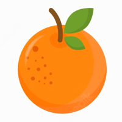
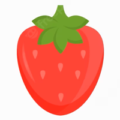
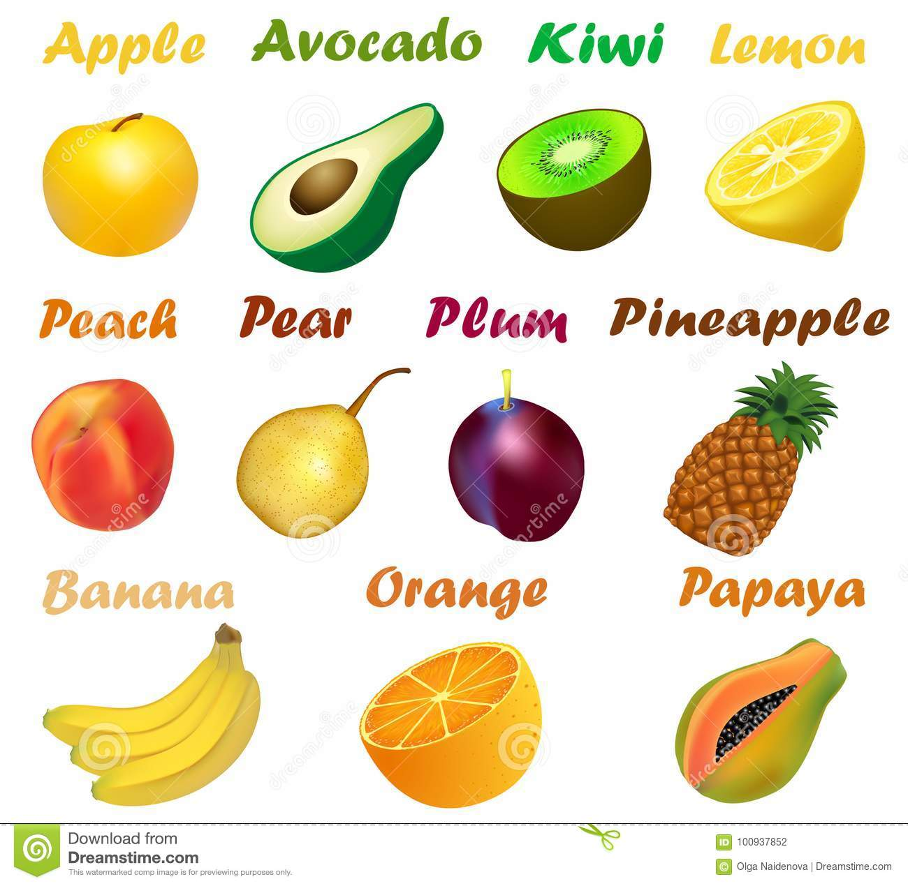

Con la parola frutta si raggruppano comunemente vari tipi di frutto commestibili. Tra questi sono compresi alcuni che non sono propriamente frutti, come le pomacee, ed escludendone altri come le zucche che sono ortaggi in base al tipo di uso che se ne fa nell'alimentazione.
Molta frutta è usata commercialmente come cibo, mangiata tale quale o in marmellate e confetture o altri tipi di conserve. Spesso la frutta è anche un ingrediente per vari piatti, specialmente i dolci. Se fresca, in genere, viene mangiata a fine pasto, anche se questa è più che altro solo un'abitudine comune.

